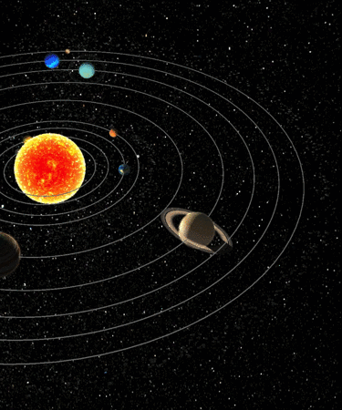

What is a Planet?
This seemingly simple question doesn't have a simple answer. Everyone knows that Earth, Mars and Jupiter are planets. But both Pluto and Ceres were once considered planets until new discoveries triggered scientific debate about how to best describe them—a vigorous debate that continues to this day. The most recent definition of a planet was adopted by the International Astronomical Union in 2006. It says a planet must do three things: 1. It must orbit a star (in our cosmic neighborhood, the Sun). 2. It must be big enough to have enough gravity to force it into a spherical shape. 3. It must be big enough that its gravity cleared away any other objects of a similar size near its orbit around the Sun. In later decades, however, Pluto’s planetary status became increasingly questioned by astronomers who noted that its tiny size, unusual orbital characteristics, and composition of ice and rock made it an anomaly among the other recognized planets. After many more Pluto-sized and smaller icy objects were found orbiting beyond Neptune beginning in the 1990s.
Planets of the solar system
The idea of what exactly constitutes a planet of the solar system has been traditionally the product of historical and cultural consensus. Ancient sky gazers applied the term planet to the seven celestial bodies that were observed to move appreciably against the background of the apparently fixed stars. These included the Sun and Earth’s Moon, as well as the five planets in the modern sense—Mercury, Venus, Mars, Jupiter, and Saturn—that were readily visible as celestial wanderers before the invention of the telescope. After the idea of an Earth-centred cosmos was dispelled and more distinctions were made about the nature and movement of objects in the sky, the term planet was reserved only for those larger bodies that orbited the Sun. When the giant bodies Uranus and Neptune were discovered in 1781 and 1846, respectively, their obvious kinship with the other known planets left little question regarding their addition to the planetary ranks. So also, at first, appeared to be the case for Pluto when, during a concerted search for a ninth planet, it was observed in 1930 as a seemingly lone object beyond the orbit of Neptune. For more information you can visit NASA website: Planet
